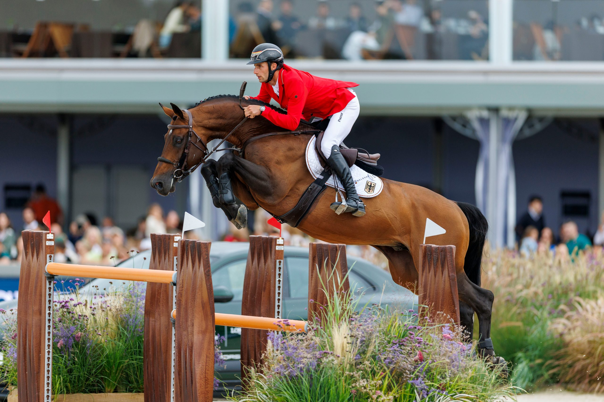
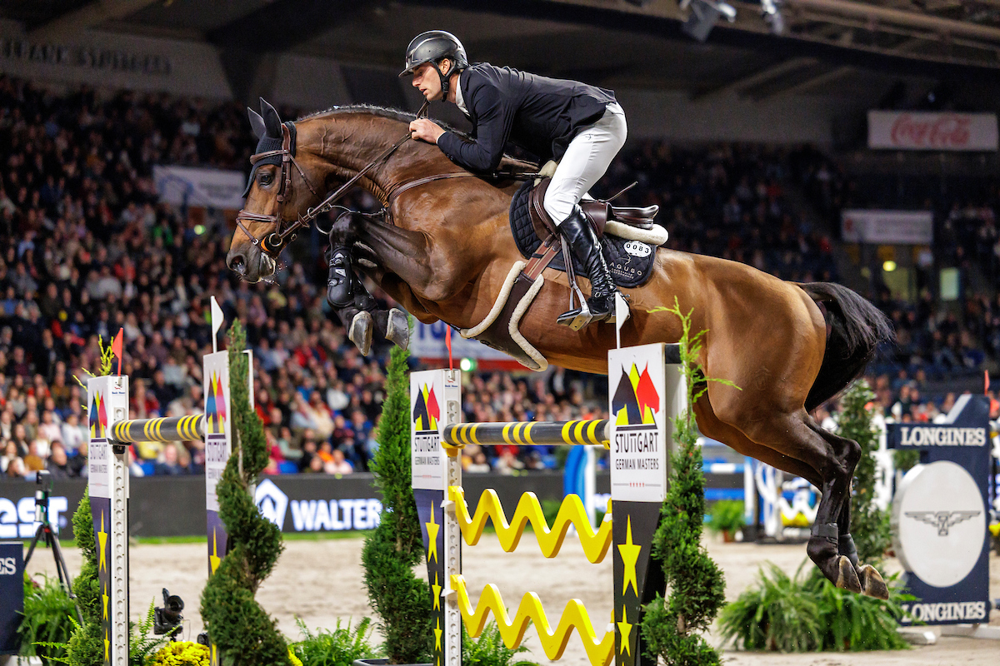
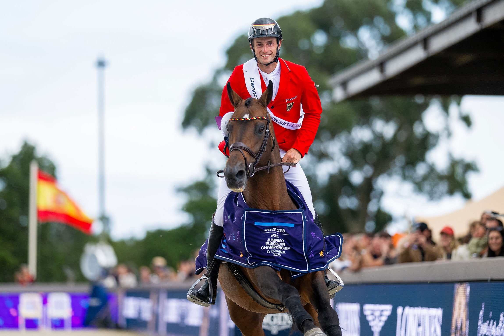
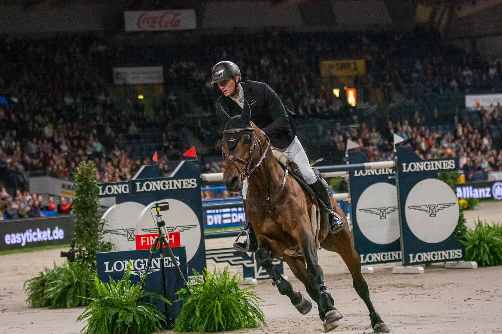

Richard Vogel és lova United Touch S

Richard Vogel
A német ugró, Richard Vogel újabb mérföldkövet ért el pályafutásában. A jelenlegi FEI Longines ugrórangsorban a jelenlegi európai bajnok a második helyre lépett a világranglistán, így hivatalosan is a világ egyik legsikeresebb díjugrója.

Richard Vogel és United Touch S
Richard Vogel és a United Touch S határozottan a vasárnapi Nagydíjra töreked. Az első forma teszten a westfáliai United Touch S megmutatta, milyen jó formában áll. A 14 éves mén és lovasának, Richard Vogelnek, aki a Rolex Grand Slam showjumping versenyére utazott a Soers-be, az első alkalommal a hétvégén először szándékosan dóziszott forma tesztet végeztek az első selejtező során.

Richard Vogel és United Touch S
Megcsinálták—Richard Vogel és a mindenképp előtűnő United Touch S aranyérmet szereztek az Európa-bajnokságon egy történelmet jelentő győzelmi pontszámmal!

Richard Vogel és United Touch S
Richard Vogel és 2025-ös FEI Ugró Európa-bajnokságon egyéni aranyérmes partnere, a legyőzhetetlen United Touch S mesterkurzust mutattak be az idővel ellen, és egyértelmű győzelmet arattak a Longines FEI Ugró Világkupán

Richard Vogel és United Touch S
Az Aacheni showjumping Grand Prix-n az európai bajnok Richard Vogel hazai pályán győzelmet aratott United Touch S-el.
Richard Vogel és United Touch S
Örömkönnyek Richard Vogel a 29 éves játékos megnyerte az Aacheni nagydíjat United Touch S lovával
Rólam
Sok hírt és képet osztok meg Richard Vogel-röl a világhírű díjugratóról és lováról.
Információ átadása
Képek
Hírek
Kapcsolat felvétel
richard.fogel.photography@gmail.com
Berlin, DE